and now,
catching sight of sight,
both countenances mirror fixed,
each rigid and mute,
thought plummets into history,
tumbling dizzily through age's fissure to where change and revision lurk,
revealed in chasms,
passages, the turns of which surprise,
exposing you and I,
a fleshy sibling,
who once sought sister's counsel,
wanting directions and puffed up platitudes,
in consolations and arrogations of care,
long since relinquished but remnant in silhouette,
in an outline you too recall, albeit differently, albeit obscurely, though which, partial and incomplete, you conjecture might reach others to build a picture of childhood,
of me, 
in an ideal,
held tight and imagined,
as I consider the architecture that could house its memory,
the labyrinths,
the atria that might host past atmospheres,
contemplating how one might visit, and how one might leave,
envisaging inner voyages,
shadowy and distant,
as yet untraversed
<

 revealed in chasms,
revealed in chasms,  passages, the turns of which surprise,
passages, the turns of which surprise,  exposing you and I,
a fleshy sibling,
who once sought sister's counsel,
exposing you and I,
a fleshy sibling,
who once sought sister's counsel,  wanting directions and puffed up platitudes,
in consolations and arrogations of care,
long since relinquished but remnant in silhouette,
wanting directions and puffed up platitudes,
in consolations and arrogations of care,
long since relinquished but remnant in silhouette,  in an outline you too recall, albeit differently, albeit obscurely, though which, partial and incomplete, you conjecture might reach others to build a picture of childhood,
of me, 
in an ideal,
in an outline you too recall, albeit differently, albeit obscurely, though which, partial and incomplete, you conjecture might reach others to build a picture of childhood,
of me, 
in an ideal,  held tight and imagined,
held tight and imagined,  as I consider the architecture that could house its memory,
the labyrinths,
as I consider the architecture that could house its memory,
the labyrinths,  the atria that might host past atmospheres,
contemplating how one might visit, and how one might leave,
envisaging inner voyages,
the atria that might host past atmospheres,
contemplating how one might visit, and how one might leave,
envisaging inner voyages,  shadowy and distant,
shadowy and distant,  as yet untraversed
as yet untraversed